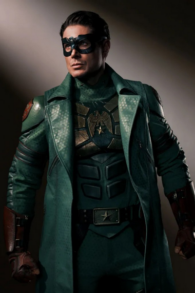

DRAMA · AÇÃO · FICÇÃO CIENTÍFICA
Vought Rising
Na década de 1950, Soldier Boy e Stormfront protagonizam um mistério de assassinato ligado às origens sombrias da Vought.
Estreia da série
Prime Video2027 · data a confirmar
O dia de estreia e os episódios ainda serão anunciados.